아시아Asia
인도네시아
싱가포르
홍콩
유럽Europe
영국
북미North America
미국
인도네시아Indonesia
우붓 (발리)
누사두아 (발리)
싱가포르Singapore
아직 기록 없음 — 다음 여행 때 채웁니다.
홍콩Hong Kong
아직 기록 없음 — 다음 여행 때 채웁니다.
영국United Kingdom
아직 기록 없음 — 다음 여행 때 채웁니다.
미국United States
아직 기록 없음 — 다음 여행 때 채웁니다.
우붓 (발리)2026. 9. 25. – 9. 30.
The Westin Resort & Spa Ubud
우붓 왕궁 · 시내
Bali Safari & Marine Park
Sacred Monkey Forest
Noema Greek Restaurant & Bar
누사두아 (발리)2026. 9. 30. – 10. 2.
The Westin Resort Nusa Dua, Bali
Ganesha Ek Sanskriti
The Westin Resort & Spa Ubud, Bali


포인트로 간 기본 룸인데도 화장실이 꽤 넉넉하고 베란다가 따로 나온다. 베란다에서 야자수 보며 컵라면 먹고, 밤엔 달 보고.
조식 뷔페 훌륭. 포크 러버 코너에 베이컨·소시지가 따로 있고, 딤섬 찜기까지. 직원들이 전반적으로 친절하다.
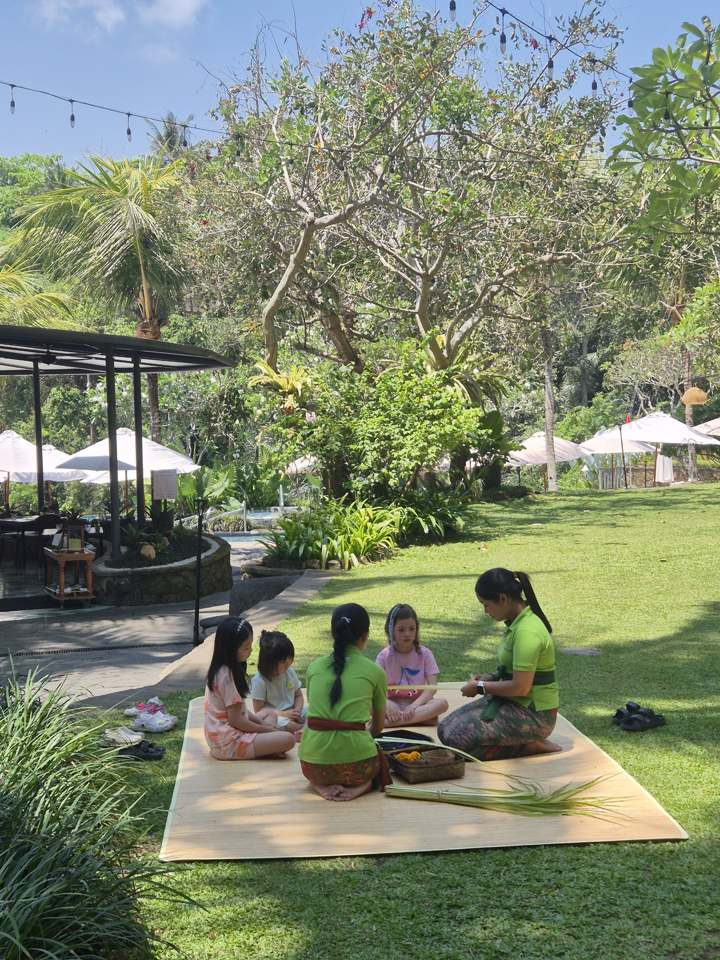
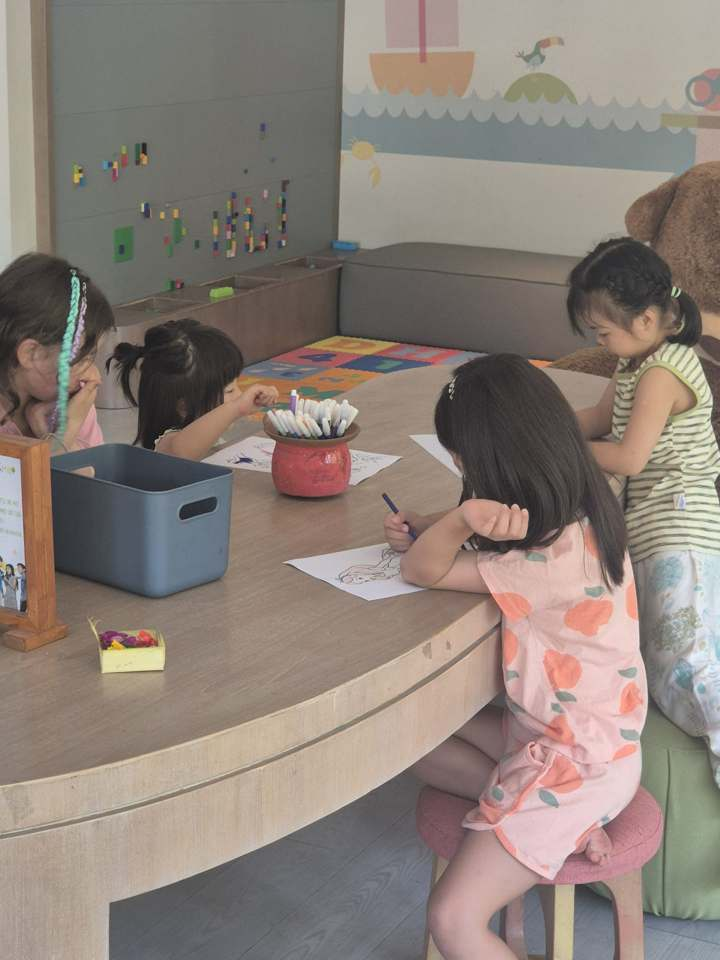
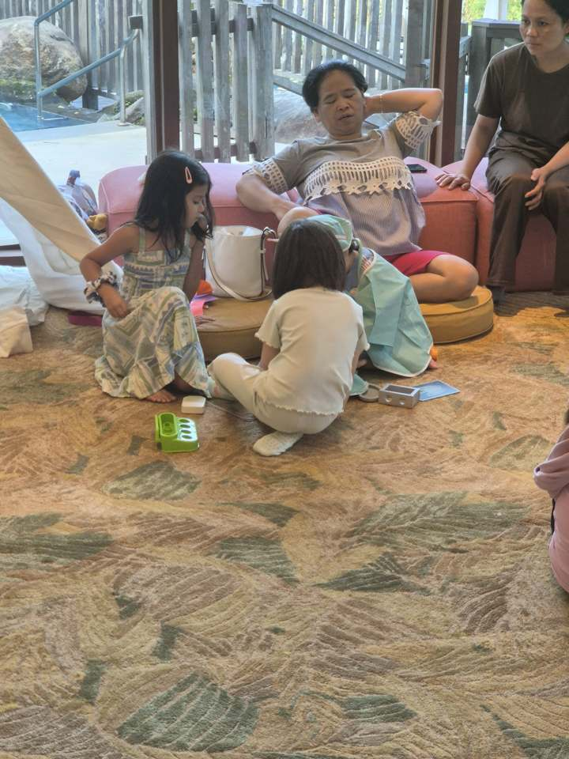
애들 맡겨놓을 프로그램이 꽤 있고 직원이 잘 봐준다. 잔디밭에서 발리 전통 차낭(야자잎 공예) 만들기, 색칠, 레고 벽, 티피 텐트에 카펫까지 — 애들끼리 다른 나라 아이들이랑 섞여서 논다. 수영장은 계곡 쪽으로 열린 구조에 풀바·가제보 — 애들은 하루 종일 튜브.
1층 수영장 쪽, 3층 조식당 쪽 두 군데. 맛은 좋은데(위 사진의 디너 — 메추리·연어·리조또) 가격이 저렴하진 않다. 점심 4인 5만원 안팎, 저녁 10만원대. 애프터눈티도 있다.
하드리쿼가 비싸다. 다음엔 면세점에서 사올 것.
The Westin Resort Nusa Dua, Bali
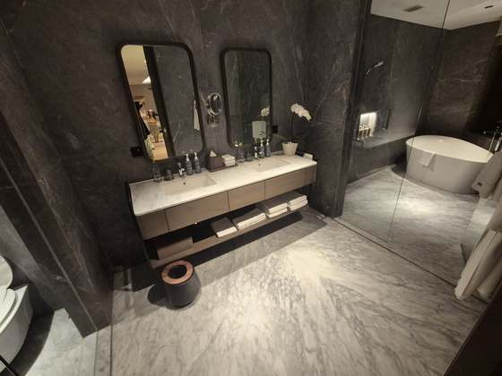
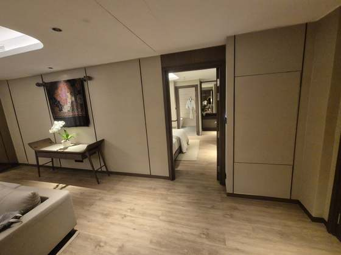
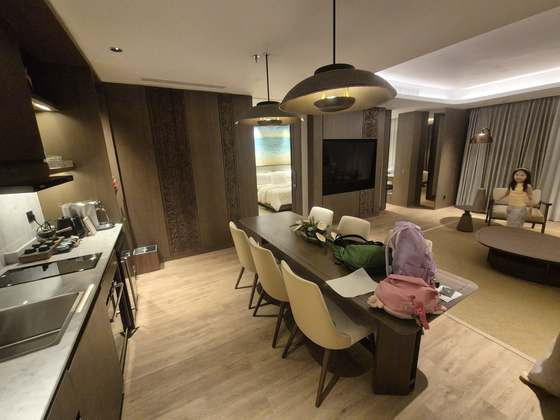
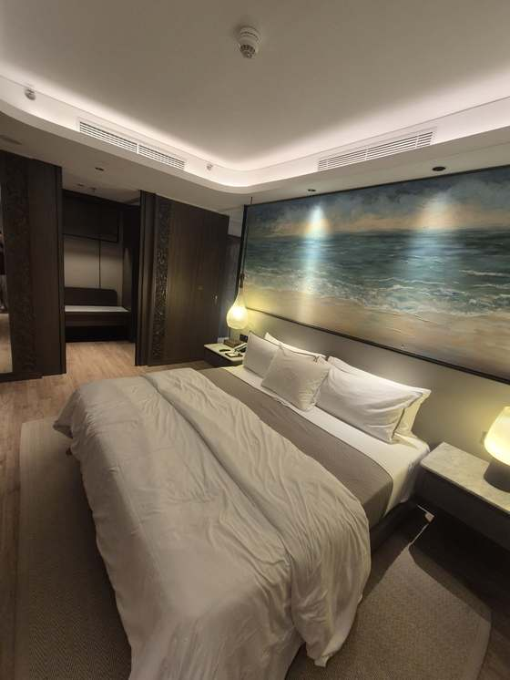
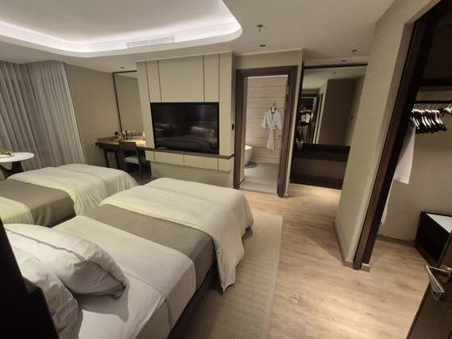
우붓에서 넘어와 2박. SNA 2장을 태웠는데 레지덴셜 스위트가 걸렸다. 거의 아파트 한 채 — 6인 다이닝 테이블에 주방 조리대까지 따로 있고, 마스터룸은 킹 침대에 바다 그림 헤드보드, 트윈룸이 하나 더. 방마다 발코니가 있다. 애들이 엄마 없이 못 잔다고 해서 마스터는 와이프·애들, 트윈룸은 나 혼자. 마스터 욕실은 다크 마블에 더블 세면대, 독립 욕조.
조식 · 수영장 · 식사는 지내보고 추가.
우붓 왕궁 · 시내


애들이 아직 어려서 걸어다니며 가게 구경하기엔 도로가 편하진 않다 — 인도가 좁고 끊기고, 오토바이가 바로 옆으로 지나간다. 적당한 쇼핑과 시내 맛집 구경에 적합한 정도.
Bali Safari & Marine Park
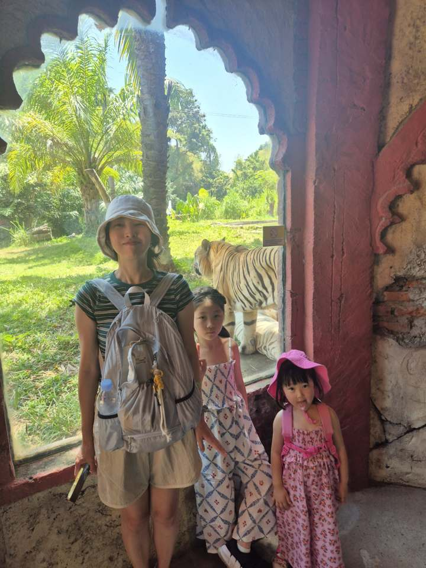
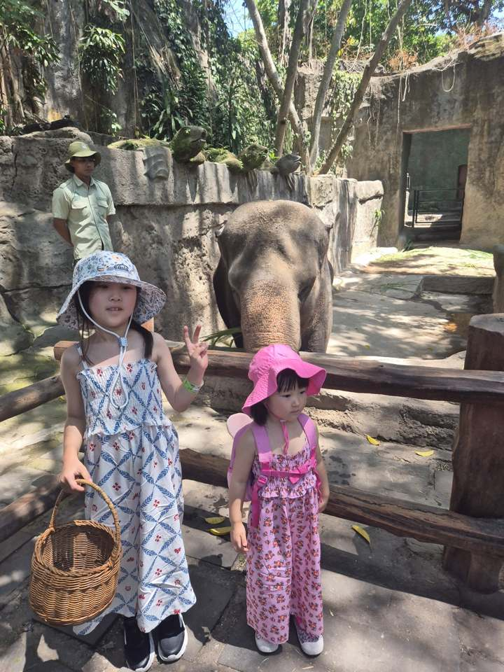
나쁘지 않음. 돈 내고 하는 체험형(코끼리 먹이 주기 등)이 많다. 해양 쪽도 같이 있는데 아쿠아리움보다 조금 큰 정도 같아서 안 갔다.
Sacred Monkey Forest Sanctuary
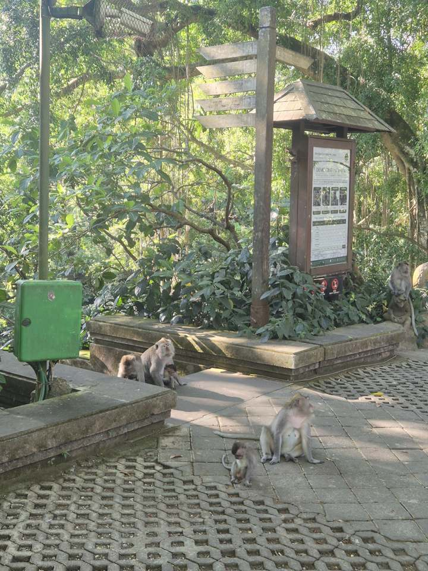
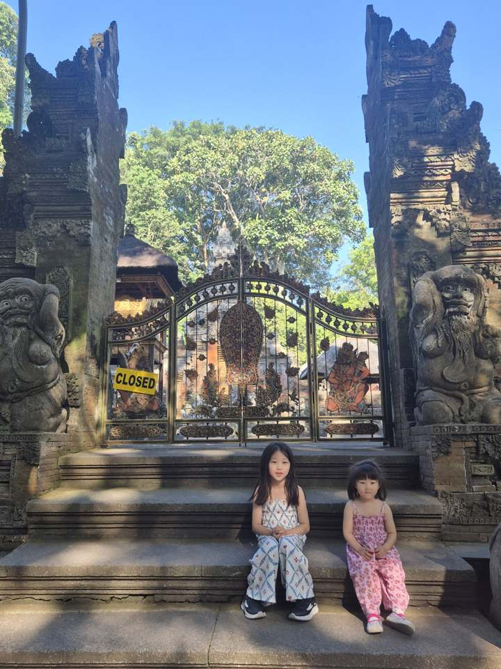
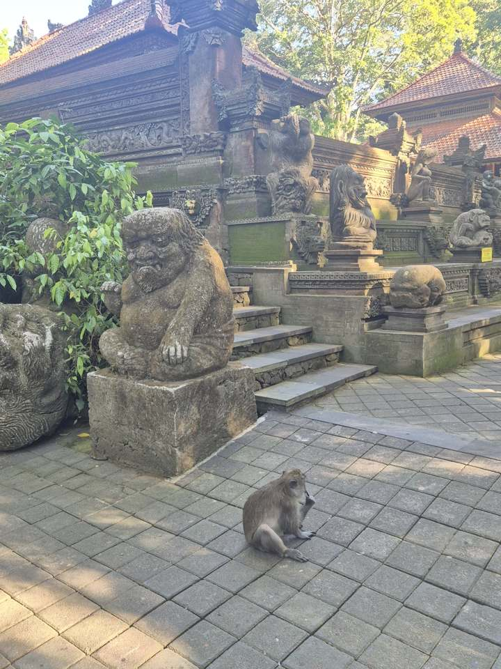
그냥 산책하면서 원숭이 보는 정도. 굳이 목적으로 들를 필요는 없을 듯. 안쪽 사원은 닫혀 있었다.
Ganesha Ek Sanskriti
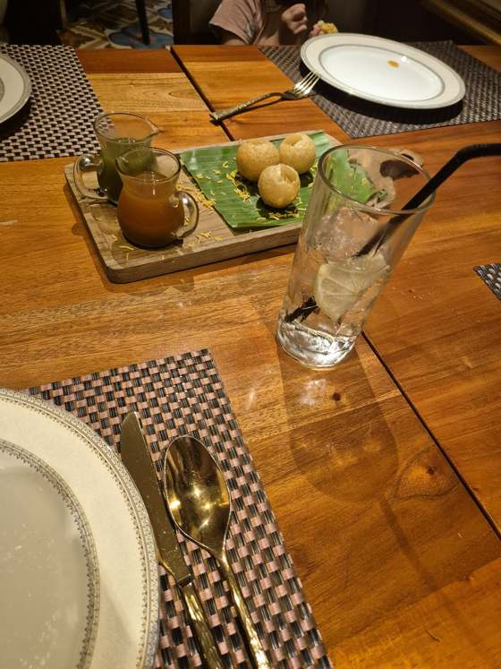
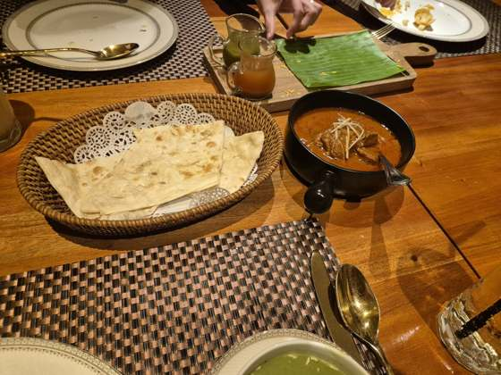
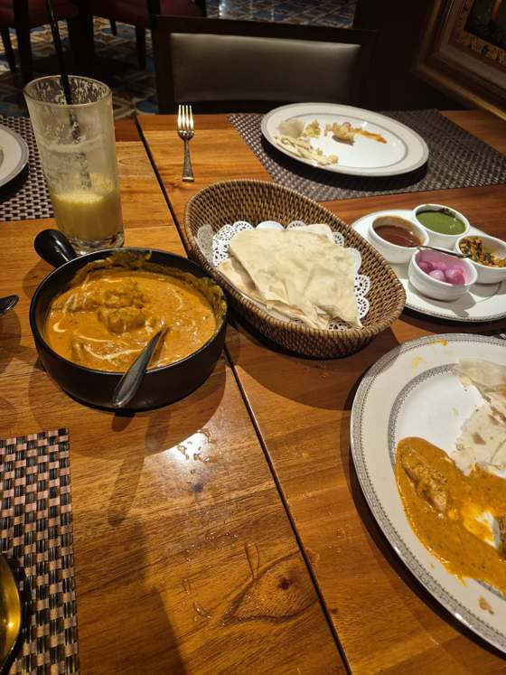
누사두아 둘째 날 점심. 아요디아 리조트 안에 있는 인도식당으로, 메뉴에 "동남아 최대 인도식당 체인"이라고 적혀 있다.
에피타이저 파니 푸리 — 민트 물·타마린드 물 두 가지에 찍어 먹는 바삭한 공. 맛 괜찮았다. 라씨는 한국식보다 시큼하고 센 편. 브로콜리 스프는 묽었다.
메인은 로간조시(250) — 메뉴 설명대로 토마토·양파 베이스라 정통 카슈미르식보다 주황빛에 신맛이 살짝. 양이 적어 보여서 올드델리 버터치킨(189) 추가. 둘 다 생각보다 매콤했는데, 버터치킨이 매운 건 크림을 덜 넣는 올드델리식 특징. 난·로티 바구니, 양파 피클·처트니 곁들임.
카레류는 다 매콤해서 애들이 먹기는 힘들었다. 그래서 애들은 쌀밥만 먹었다. 인도 카레는 원래 다 매운가?
Noema Greek Restaurant & Bar
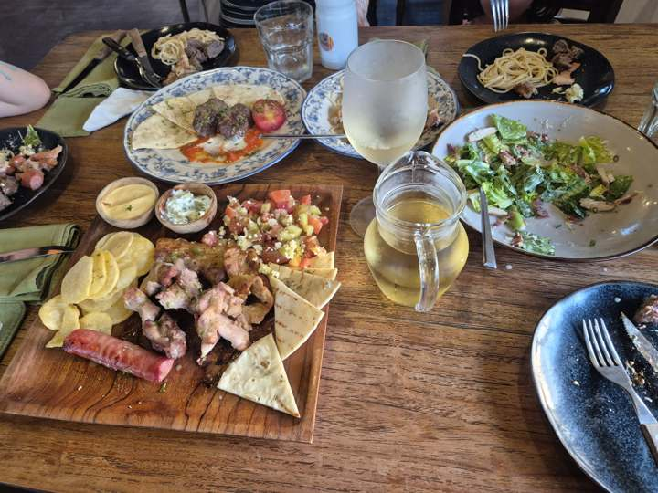
아트마켓 구경하다 들어간 그리스 식당. 음식은 훌륭 — 수블라키 플래터(닭·소시지·피타·차지키·그릭샐러드), 미트볼, 파스타. 벌레가 좀 많고 스파클링 와인에 스파클링이 없었다. 가격은 우붓치고 꽤 있는 편. 아멕스를 안 받아서 현금 뽑아서 냈다.